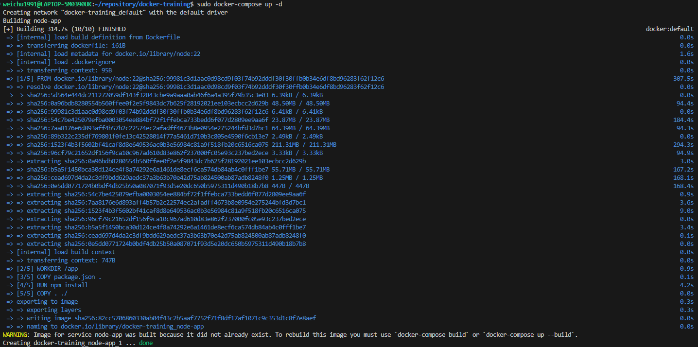

Containerise with Docker Fundamental Part 02

Image source: by Wei Chu
Table:
Docker Compose - Multiple Containers Configuration
Definition:
A docker-compose.yml file is used to define and manage multi-container Docker applications. It allows you to configure your application's services, networks, and volumes in a single file, making it easier to manage and deploy complex applications.
Exercise:
Step 1. Creating a Docker-compose.yml in the working directory.
The configuration primarily featuring 2 parts: version & services.
docker-compose.yml
- version: this specifies the version of the docker compose file format.
- services: this defines the container services that make up the application ( ex: web app, database, etc.)
Step 2. Using commands to run the docker-compose file
-
Run the command
$ docker-compose up -dto build the image. The flag-dmeans starting the services in detached mode, which sill means that the containers will run in the background, allowing you to continue using the terminal for other commands. The image is successfully built shown as below:  -
After the above process, using the command
$ docker psto call the list of existing images to check the newly created image. Shown as below:
-
Checking with the localhost network on a browser to test the web connection. It should be connected shown as below:

Step 3. Bringing down the resources
-
Using the command
$ docker-compose down -vto remove the container built by the image specified in the dockerfile. The flag-vmeans the anonymous volumes will deleted as well. Using the flag to avoid redundant volumes build up. -
Using the command
$ docker psto double check if the resource has been removed. The result is shown as below:
Step 4. Bringing up the docker-compose file to see what happens
-
This time, the container building process was way quicker than the beginning when the docker-compose file was run for the first time. This is because the process won't rebuild the image unless the dockerfile was modified before docker-compose file was run. Building the container this time was a static process.The result is shown as below:

-
Forcing Rebuild - We can run the command
$ docker-compose up -d --buildto force docker rebuild the image if necessary.
Docker Compose & Development Staging
- Using Docker Compose to build both development environment & production environment. It can be achieved by using 2 docker files, but Docker Compose creates a more integrated workflow.
- The exercise here focuses on using Docker Compose configuration to dictate which running environment used rather than explicitly specify in the dockerfile.
Step 1. Stop explicitly indicating the running environment in the dockerfile
- Changing the default command executed when a container is started by the Docker Image.
-
Stop explicitly indicating the running environment in the dockerfile by changing the command for running the app from
CMD [“npm”, “run”, “dev”]toCMD [”node”, “index.js”]which is for generally bringing up the app. The running environment will be specified later by Docker Compose.Dockerfile

Step 2. Start writing docker-compose configuration for both dev & prod environment
-
Starting with the
docker-compose.ymlas the base file containing shared configuration variables.docker-compose.yml
-
For Dev environment, creating another Docker Compose YAML file for dev environment called
docker-compose.dev.yml.docker-compose.dev.yml
-
run the following command to bring up the container wit docker compose files for development environment:
bash
The result:
-
The web page should be working in the browser.

-
Testing if the bind-mount has been successfully created as well.
-
current preview content:

-
change the source code of the web page, replacing the “!!!” with a full stop “.”:
index.js

-
The web preview has been updated as well once the update of the source code has been saved.

-
current preview content:
-
Bringing down the container with the following command:
bash
Result:
-
For PROD environment, creating another Docker Compose YAML file for prod environment called
docker-compose.prod.yml:docker-compose.prod.yml
-
Using the same command as the one for the DEV environment, but this time change the Docker Compose Environment file to
docker-compose.prod.ymlin the script:bash
Result:
-
You will find that the review page in the browser is not reflecting the changes in the source code from the previous section when we were testing the bind mount of the dev environment:
That is because any update to the dockerfile and the source code, the image of the container needs to be rebuilt.
-
Therefore we will need to bring down the container and run the
-- buildflag in our command to force the docker compose rebuild the image before bringing up the container:-
Run the following command to bring down and remove the containers:
bash
-
Run the following command to force docker compose rebuild the image before deploying the containers:
bash
Result:
-
Run the following command to bring down and remove the containers:
-
We immediately can see that the web preview now has reflected the update of the web page source code done earlier:
-
Try to change the source code again to see if the preview page is still reflecting the update:
index.js
 It is not. That proves we have set up the dev and prod environment to pipeline our project development. It should not be bind-mount to the production, only when the docker image had been rebuilt to deploy new changes to the prod environment.
It is not. That proves we have set up the dev and prod environment to pipeline our project development. It should not be bind-mount to the production, only when the docker image had been rebuilt to deploy new changes to the prod environment.
Clean-up: Excluding docker-compose files and nodemon module for DEV from the PROD stage container
Step 1. Listing files-to-be-excluded in the .dockerignore
using .dockerignore to exclude any file related to Docker Compose from being parsed into the prod container.
-
If we enter the PROD node and list out the files existed in the instance directory, we will find docker compose files are parsed into the instance, and we don't want that for security and best practice reason.

-
Exist the instance, and head to the
.dockerignorefile. Writing indocker-compose*in the list.*will help system to detect and ignore all the files containing phrase docker-compose in their filename..dockerignore

Step 2. If statement bash script in dockerfile for choosing installed modules
We can give bash script if statement in the dockerfile to make Docker Compose have the intelligence of choosing what NODE.js modules should be installed and what shouldn't.
-
Firstly, we can see the npm dependency on nodemon is specified for DEV in the dependency configuration file
package.json:package.json

-
However, we can also see the nodemon package in the PROD instance, which is not needed and taking up storage for nothing:

-
Therefore, we need to modify running script in the dockerfile with if statement shown as below:
Dockerfile

-
ARGin the previous script means it will pass the NODE_ENV argument into the process of running a container. Subsequently, The argument then will have to be specified in the Docker Compose DEV environment file:docker-compose.dev.yml

-
After finishing the configuration change above, testing the workflow of bringing up and down of the app running in the DEV instance:
-
bringing down the existing container and bringing up again with DEV docker-compose file. Including the flag
--build to rebuild the image.
-
Check if bind-mount is working.
index.js


-
bringing down the existing container and bringing up again with DEV docker-compose file. Including the flag
-
Now testing the PROD instance side:
-
Bringing down the container file again and bring up with prod docker-compose file and the flag
--buildto rebuild the image. -
check if bind amount is working by changing the source code of the web app:
index.js

-
The web page is not reflecting to the change in the source code. That is correct.
-
Bringing down the container file again and bring up with prod docker-compose file and the flag
-
Check again if docker-compose files are excluded from the PROD instance. Enter the prod container instance to check:

- If statement to make Docker Compose intelligently control dependency is now completed.